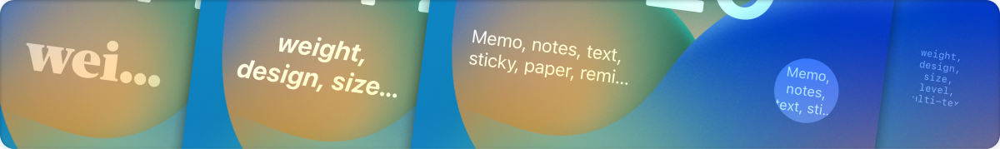

A note app dedicated to the new "lock screen widget" feature of iOS 16, released in Fall 2022!


This is a note app specialized for the lock screen widget, an iPhone-only app.
When you want to take a note, you can quickly write it down on the lock screen and check it on the lock screen at any time!
The design of the note on the lock screen can be flexibly customized to meet various purposes of "leaving notes" and "displaying text on the lock screen".
Tapping the widget immediately launches the keyboard to edit the note.




The iPhone 14 Pro with Always On Display turns your iPhone into your most accessible notepad.
Quote: https://www.apple.com/jp/iphone-14-pro/
Free of charge
Hide ads (160 yen)